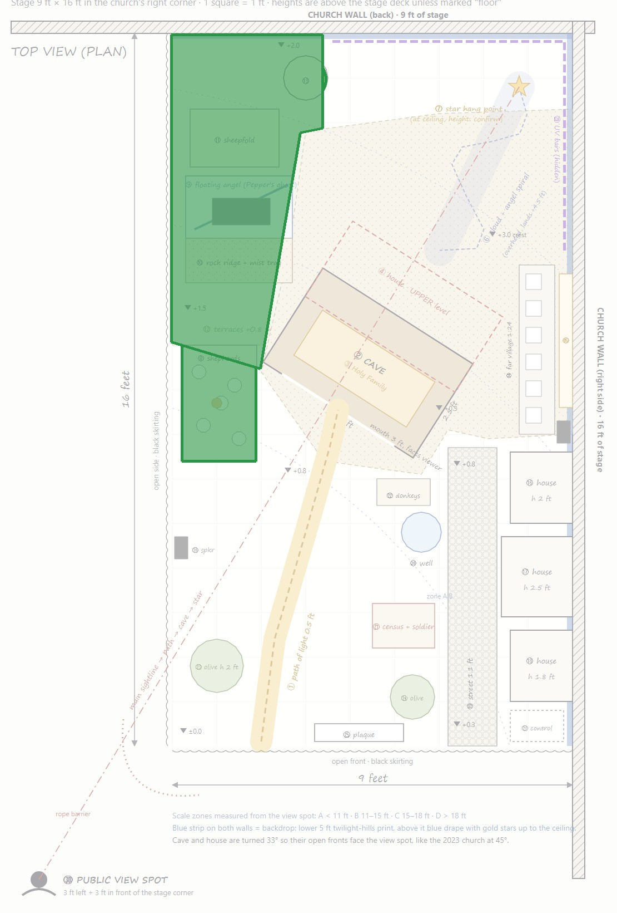
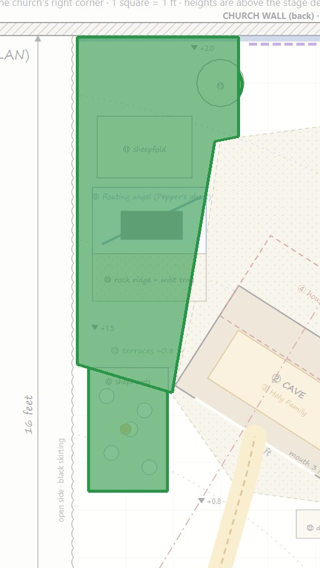

Build window: 26 Nov → 16 DecAbout 8 person-daysFigures and painting groupCost: Prop-only ₹7,500 · Lean ₹14,600 · Full ₹21,800
Position and size
Left side of the stage: four terrace boxes 3.4 ft wide over a 7 ft run at +0.8, +1.2, +1.6, +2.0 ft. Shepherds 1.2 ft (1:6), sheep 0.45 ft, fold 1:12, tower 1.5 ft.
Where it sits

Close-up

Blueprint drawings (dimensioned)
Materials (₹)
Item
Qty
Prop-only
Lean
Full
Thermocol 4 in ×3 + 2 in ×1, 8 × 4 ft
4 sheets
3,200
6,400
7,800
PoP + grout
2 bags
800
1,200
1,600
Soil, sand, artificial grass, moss
lot
1,200
1,200
1,800
Paint + brushes
4 L
1,000
1,500
2,000
Shepherd figures 1.2 ft (old man, young man + lamb)
2
0
2,400
5,000
Wool sheep
6
0
600
1,800
Campfire: twigs + orange flicker LED
1
300
300
500
Pebbles + glue for the sheepfold
lot
500
500
600
Watchtower: PVC pipe, clay, pebbles
1
500
500
700
Total for this block
7,500
14,600
21,800
Tools: Hot knife, glue gun, brushes, soldering iron
How to build it, in order
Build four ply boxes 1.75 ft deep at +0.8, +1.2, +1.6 and +2.0 ft.
Face with 2 in thermocol carved as dry-stone walls; glue real pebbles on the fronts.
Soil/sand on the treads; grass patches and moss.
Sheepfold: pebble ring with a thorn gate. Watchtower: 1 ft PVC + pebble clay.
Place the shepherds, campfire and sheep last.
Before you start
Blocks E and F (floating angel) share this zone; agree the ridge position with block F before fixing the boxes.
Check before cutting
Items 9 and 10 (sheet 5) sit inside this zone; build them together.
Done when (tick each)
Four boxes level and screwed to A; treads covered with soil/sand and grass.
Campfire LED flickers warm orange and is hidden from the front.
Sheep, shepherds and fold are paler and cooler than the village (tier B–C).
Boxes lift out singly.
Hands over to
Sits on A. Campfire LED and field flood use H. Ridge and screen (F) sit in the same zone.